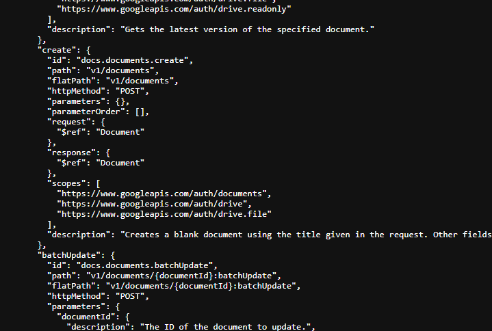
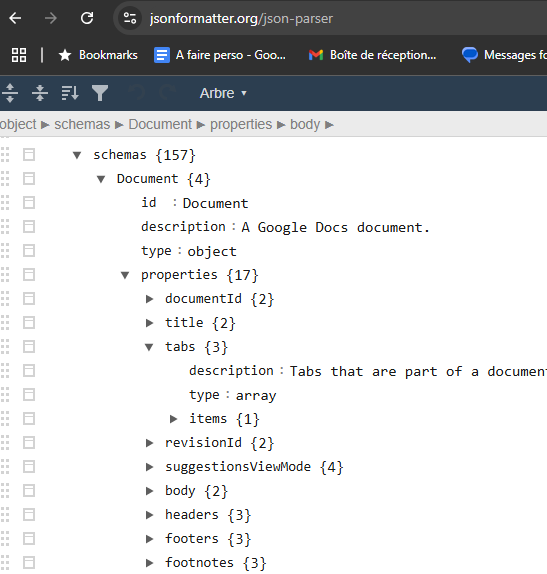
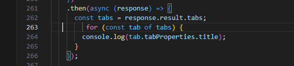
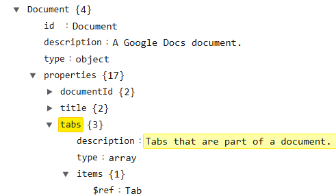
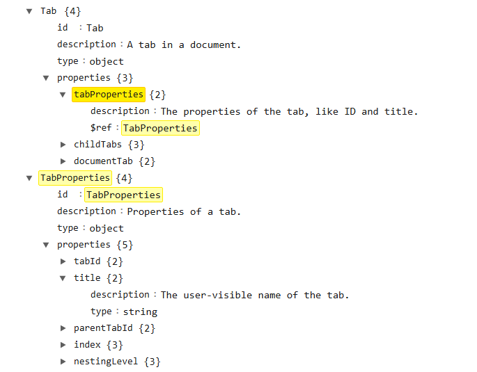
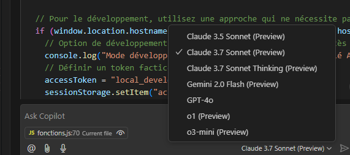
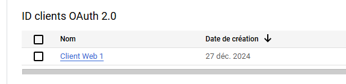
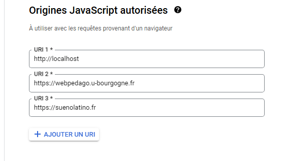

Projet
Projet
Il y a des extensions ou bibliothèques qui prétendent faire cette conversion gdoc>html, mais elles ne tiennent pas compte de la "nouvelle" fonctionnalité onglets des gdoc.Or je souhaite :
- lister les onglets et sous-onglets du gdoc pour créer un menu html
- parser le contenu de chaque onglet pour créer le html correspondant, avec :
- prise en charge des titres
- prise en charge des formats italiques, gras
- utilisation du css pour personnaliser le résultat
- prise en charge des liens externes
- récupération des images pour les mettre dans un dossier et pointer le src des balises img vers l'image dans ce dossier
Quand on fait un simple fichier/partager/publier sur le web d'un gdoc, on aura que le premier onglet.
Il faut aller dans google drive, puis clic-droit/télécharger pdf ou zip (html+dossier images) pour avoir le gdoc complet. Mais pas forcément avec le formatage qu'on souhaite. A creuser quand même ?
A faire
- Fonctionnalité de recherche dans le contenu converti
- ajouter un chat IA sur le document
Notes
Utilisation de l'API Google Doc côté client
L'idée est de parser un gdoc avec l'api google doc client.Pour la prise en charge des onglets, voir ici : https://developers.google.com/docs/api/how-tos/tabs?hl=fr
Le projet actuel est ici
C:\wamp64\www\qcm_en_developpement\tests\test_create_html_from_gdoc
et l'URL locale :
http://localhost/qcm_en_developpement/tests/test_create_html_from_gdoc/create_html_from_gdoc.html
La partie parsing est dans fonctions.js
Pour connaître toutes les propriétés et méthodes possibles pour l'api, il faut utiliser le "fichier de découverte" pour l'API.
https://docs.googleapis.com/$discovery/rest?version=v1
On peut regarder aussi :https://developers.google.com/docs/api/reference/rest/v1/documents?hl=fr
C'est un json

pour mieux le parcourir, on peut utiliser
https://jsonformatter.org/json-parser

Exemple :

qui vient de :

et

Claude sonnet 3.7 dans visual studio code
c'est l'IA que j'ai utilisé pour m'aider à faire le code avec mon abonnement copilot github
Plus lent, mais beaucoup plus efficace

Version en ligne
Pour pouvoir utiliser l'API de Google pour parser le Google Doc, j'ai été obligé d'ajouter un nom de domaine, et pas seulement une adresse IP, dans les URI admissibles pour le client OAuth du projet Google.
Donc l'hébergement de test est ici :
https://suenolatino.fr/test_create_html_from_gdoc/create_html_from_gdoc.html


Documentation
Table des matières
Documentation (générée par claude Sonnet 3.7)
Résumé
Ce programme permet de convertir un document Google Docs en site HTML statique autonome, tout en préservant sa structure, son contenu, ses images et ses liens. Il transforme la structure d'onglets du document en une navigation web interactive, et gère diverses ressources comme les images insérées et les liens vers des fichiers externes (richLinks). Le site généré peut être hébergé sur n'importe quel serveur web.
Fonctionnement général
Flux de travail
- Authentification: L'utilisateur s'authentifie à l'API Google Docs
- Sélection du document: L'utilisateur entre l'ID du document Google Docs à convertir
- Analyse et extraction: Le programme analyse le document et extrait:
- La structure des onglets et sous-onglets
- Le contenu HTML de chaque onglet
- Les objets insérés (images, liens vers des fichiers Drive)
- Traitement des ressources:
- Les images sont converties en base64 puis sauvegardées comme fichiers
- Les liens vers des fichiers Drive sont formatés avec des icônes appropriées selon leur type
- Génération du site: Le programme:
- Crée un dossier dédié au document (avec un nom basé sur le titre)
- Génère un fichier HTML principal avec la structure de navigation et le JavaScript nécessaire
- Sauvegarde les images dans un sous-dossier 'images'
- Copie le fichier CSS pour le style
- Affichage du résultat: Le site généré est ouvert dans un nouvel onglet avec des informations sur l'emplacement des fichiers
Architecture technique
Le programme utilise:
- JavaScript côté client pour interagir avec l'API Google
- PHP côté serveur pour la manipulation des fichiers et dossiers
- Une architecture modulaire séparant les responsabilités entre différentes fonctions
Description détaillée des fichiers et fonctions
Fichiers principaux
index.html
Interface principale permettant à l'utilisateur de s'authentifier, sélectionner un document et lancer la conversion.
fonctions.js
Contient toutes les fonctions JavaScript pour l'authentification à Google, le traitement du document et la génération du site.
styles.css
Définit le style visuel du site généré, avec la mise en page flexible, la navigation et la présentation des contenus.
Scripts PHP côté serveur
- create_folders.php: Crée la structure de dossiers pour chaque document
- save_file.php: Sauvegarde le fichier HTML principal
- save_image.php: Sauvegarde les images extraites du document
- list_images.php: Liste les images existantes pour éviter de les télécharger à nouveau
- get_base_url.php: Détermine l'URL de base pour les liens du site généré
Fonctions principales (dans fonctions.js)
Authentification et initialisation
initClient()
Initialise le client Google API avec les identifiants appropriés et les scopes nécessaires.
handleAuthClick()
Gère le clic sur le bouton d'authentification et démarre le processus d'authentification à Google.
updateSigninStatus(isSignedIn)
Met à jour l'interface utilisateur en fonction de l'état d'authentification.
Traitement du document
parseGoogleDoc(fileId)
Fonction centrale qui:
- Récupère le document complet auprès de l'API Google Docs
- Extrait la structure des onglets et leur contenu
- Identifie tous les objets inline (images, richLinks)
- Collecte les données de ces objets
- Génère et affiche le site HTML résultant
processDocContent(content)
Traite le contenu du document pour extraire le HTML, les styles et les liens.
extractTabsData(tabs)
Extrait la structure complète des onglets et sous-onglets du document.
getInlineObjectsData(fileId, inlineObjectIds)
Récupère les données détaillées des objets insérés dans le document (images, liens Drive).
Conversion et traitement des ressources
convertImageToBase64(imageUrl)
Convertit une image en chaîne base64 pour inclusion dans le HTML ou sauvegarde.
getExistingImages(folderName)
Récupère la liste des images déjà existantes dans le dossier images du dossier HTML pour éviter les doublons et éviter de recréer les images si on lance plusieurs fois la conversion sur le même gdoc.
processTabsContent(tabsData, objectData, folderName)
Prétraite le contenu des onglets pour adapter les références aux images et autres objets.
Génération et sauvegarde du site
generateSiteHtml(docTitle, tabsData, objectData)
Génère le code HTML complet du site avec la navigation, le contenu et le JavaScript nécessaire.
generateNavigationMenu(tabsData, level)
Génère le HTML pour le menu de navigation à partir de la structure d'onglets.
generateTabContent(tabsData)
Génère le HTML pour le contenu des onglets.
saveGeneratedSite(htmlContent, imagesData, docTitle)
Sauvegarde le site généré sur le serveur:
- Crée un dossier nommé d'après le titre du document
- Sauvegarde le fichier HTML principal
- Traite et sauvegarde les images
- Copie le fichier CSS
displayGeneratedSite(htmlContent, imageData, docTitle)
Affiche les informations sur le site généré et ouvre le résultat dans un nouvel onglet.
Gestion des richLinks
Le programme est particulièrement attentif à la détection des types de fichiers pour les liens externes (richLinks) du type fichiers sur Google Drive ou youTube.
Les liens de ce type peuvent apparaître dans le gdoc sous la forme d'une puce montrant le type de fichier (gsheets, jpg, ..) avec comme texte le nom du fichier et non son URL.
Il utilise plusieurs méthodes pour déterminer le type de fichier correct:
- Le MIME type fourni par l'API Google Docs (méthode la plus fiable)
- L'analyse de l'URL pour les services Google identifiables (Sheets, Slides, etc.)
- L'analyse des extensions de fichiers dans l'URL ou le titre
- Des logiques spécifiques pour les liens Google Drive qui ne révèlent pas directement leur type
Chaque richLink est ensuite affiché avec une icône correspondant à son type (document, image, vidéo, etc.).
Bonnes pratiques implémentées
- Optimisation des performances:
- Réutilisation des images déjà téléchargées
- Chargement dynamique du contenu des onglets
- Expérience utilisateur:
- Navigation intuitive entre les onglets
- Préservation de la hiérarchie du document original
- Affichage adapté des liens vers les fichiers externes
- Structure de code:
- Séparation des responsabilités entre les fonctions
- Journalisation détaillée pour le débogage
- Gestion robuste des erreurs
- Sécurité:
- Sanitisation des noms de dossiers et fichiers
- Validation des entrées utilisateur
Utilisation
- Ouvrez la page index.html dans un navigateur
- Accordez les droits quand le popup d'authentification Google apparaît. Il s'agit de permettre une navigation dans votre Google Drive.
- Entrez l'ID du document Google Docs (visible dans l'URL)
- Cliquez sur "Analyser le document"
- Le site généré s'ouvrira dans un nouvel onglet
Extensions possibles
- Support de thèmes visuels multiples
- Amélioration du traitement des tableaux complexes
- Ajout d'un mode d'impression optimisé
- Support pour les commentaires Google Docs
- Fonctionnalité de recherche dans le contenu converti